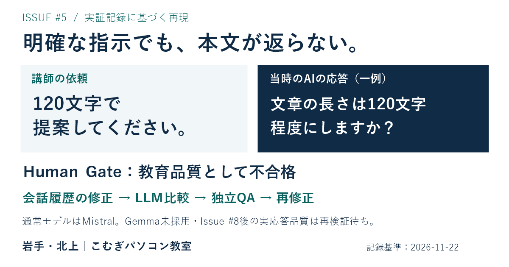
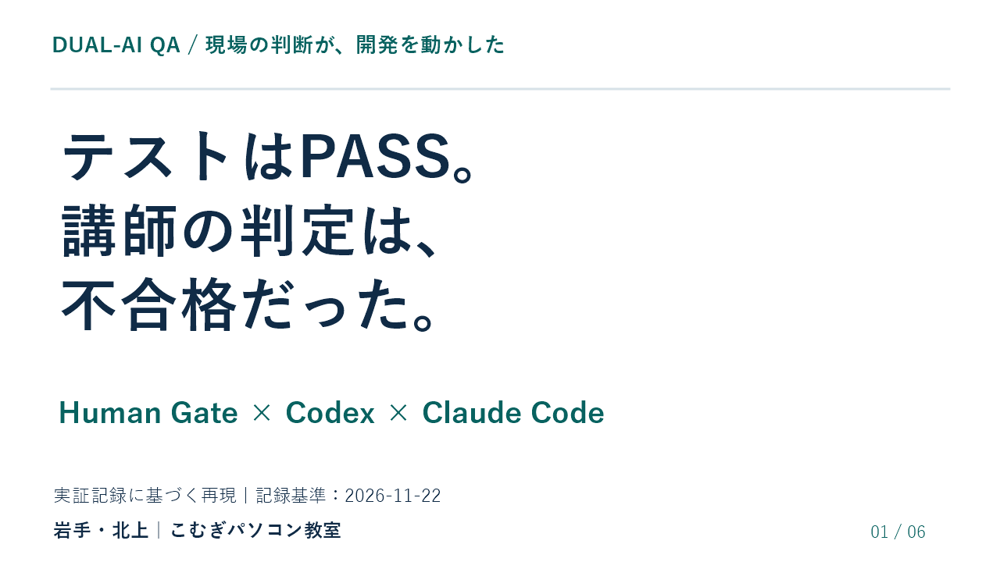
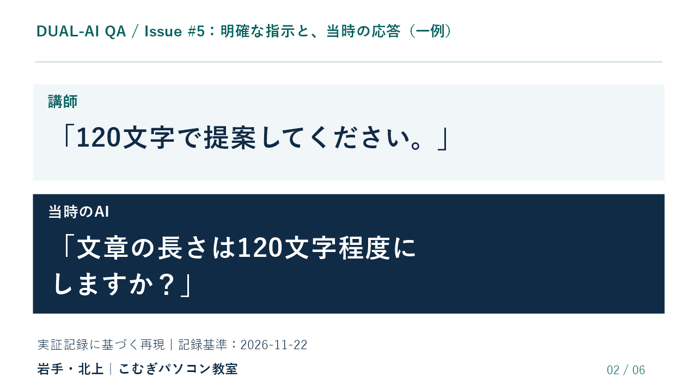
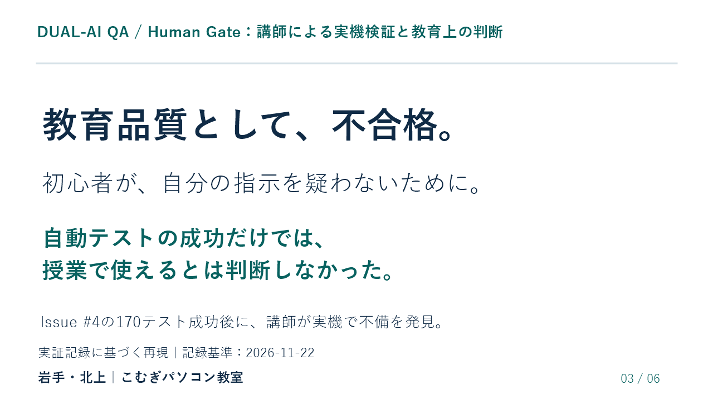
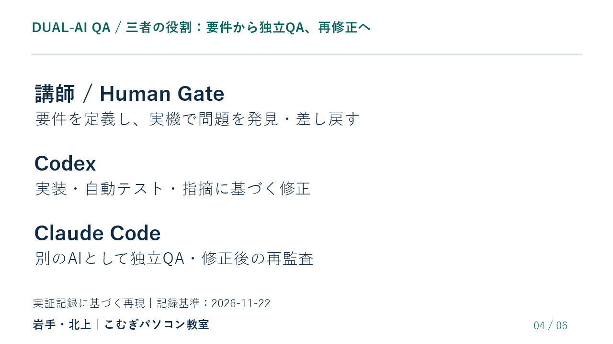
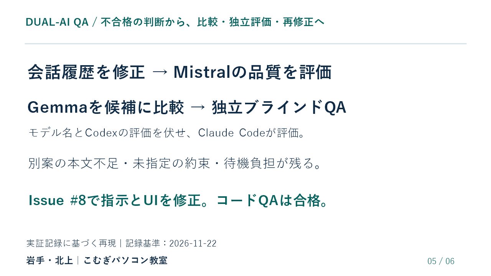
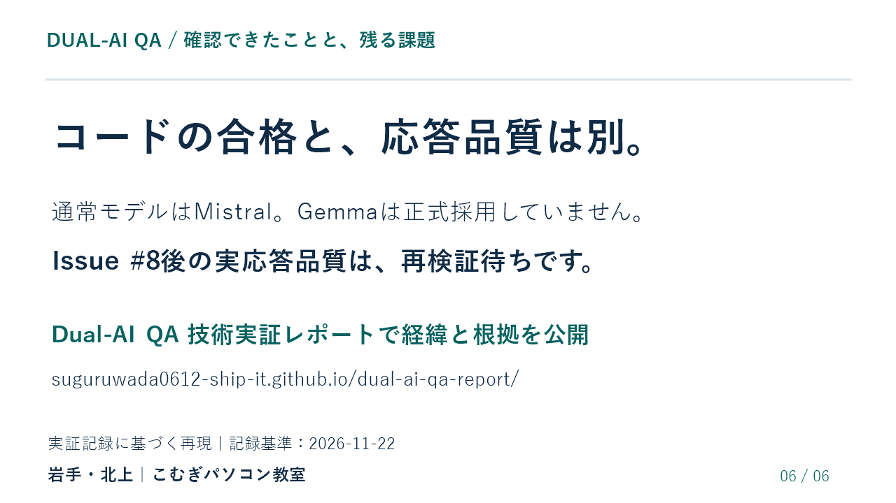

メディア向け実証コンテンツ
現場の判断を、画像と動画で伝える
こむぎパソコン教室（岩手・北上）のDual-AI QAを、Issue #5の具体例から紹介します。制作・公開日：2026年11月23日。紹介する開発・品質判断の基準は2026年11月22日、参照コミット 47d8208 の公開済み記録です。新たな製品テストや実AI評価の結果ではありません。
技術実証レポート ／ プレスリリース ／ Issue #1〜#8の公開根拠
1. 講師の依頼と、当時のAIの応答

講師は「120文字で提案してください。」と依頼しましたが、当時のAIは「文章の長さは120文字程度にしますか？」と確認し直す場面がありました。講師は教育品質として不合格と判断。会話履歴の修正、Mistralの品質評価、候補Gemmaの比較、Claude Codeの独立ブラインドQA、Issue #8の再修正へつながりました。
これは実際のアプリ画面のキャプチャではなく、公開した実証記録に基づく再現です。修正後のMistral評価では文章依頼12回すべてに本文を返していますが、文字数や別案などの課題が残りました。当初の観察と修正後の結果を同一視しないでください。


2. 52秒で見るHuman GateとDual-AI QA
横長1280×720、24fps、52秒、H.264 MP4。日本語テロップを映像内に入れ、音声なしで理解できる構成です。全編に「実証記録に基づく再現」と基準日を表示しています。実画面・実操作の録画ではありません。
MP4を開く・保存する ／ 字幕VTT ／ 台本・絵コンテ・再制作手順
6場面の絵コンテを見る












記録上、Issue #8はコードQA合格ですが、修正後の実LLM応答品質は再検証待ちです。通常モデルはMistralで、Gemmaは正式採用していません。動画はこの判断を維持しています。
3. 技術者向け：外部APIなしの最小QAサンプル
完全な架空データで、先行評価の固定、評価者へ渡す情報の限定、入力のハッシュ照合、評価差の比較を実行できます。CodexとClaude Codeの役割を説明するための固定された模擬評価です。実際のCodex・Claude CodeやLLMは呼びません。新たな独立監査を実施したという意味ではありません。
node examples/blind-qa/demo.mjs
node --test examples/blind-qa/workflow.test.mjs依存関係はNode.jsの標準ライブラリだけです。APIキーやnpmパッケージのインストールは不要です。詳しい再現範囲・未再現の範囲はサンプルREADMEをご確認ください。
根拠と制作・検証の範囲
実例と経緯は公開用Issue経緯資料から構成しました。非公開の製品コード、生ログ、受講生データ、秘密情報は追加していません。QAサンプルの入力・評価は教材用の創作で、上記実例の記録とは分けています。
成果物の別担当レビュー、サンプルの実行テスト、動画の再生確認、公開ファイルの確認結果は検証記録に記載します。この制作・検証を既存のテスト件数、独立QA回数、実AI通信回数に加算していません。
発信：岩手・北上｜こむぎパソコン教室。公式サイト・お問い合わせ